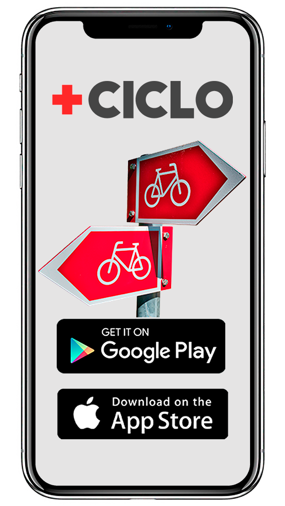

Já pensou em alugar uma bike pertinho da sua casa e poder devolver em outro bairro da cidade?
São muitas bikes em estações por toda a cidade pra você passear, ir até o trabalho, até a escola e ainda contribuir com o meio ambiente, além de fazer bem para sua saúde!
Quer saber mais? Baixe agora mesmo nosso aplicativo disponível para Android e IOS e vem pedalar com a gente!
